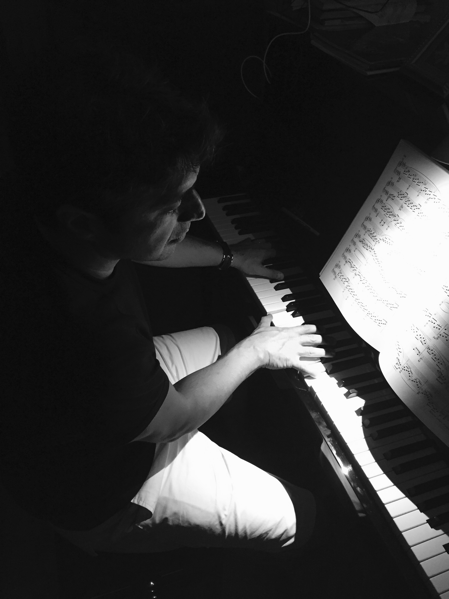

Hakkımızda
Yarışmanın temel amacı çocukların sanatsal bağlantılarını kuvvetlendirmek, ulusal - uluslararası müzik okulları ve öğretmenleriyle buluşma ve paylaşım alanı yaratabilmek, piyano müziği alanında yeni yetenekleri bulmak ve genç neslin kültürel eğitiminin önemli bir parçası olarak klasik piyano müziğini teşvik etmek, hatta kariyerinin başlangıcında olan yetenekli piyanistleri desteklemektir. Bu yarışma sayesinde çocuklar kendi çevrelerinin dışında bir platformda sahne alma, kendilerini deneme ve tecrübe kazanma şansına sahip olarak amatör ruhun şevkini ve tutkusunu ödüllendirebileceklerdir.
-

-
Ahmet Levent Atlıer, Piyano
Hisar Okulları Müzik Bölüm Başkanı
Yarışma Koordinatörü
1971 İstanbul doğumlu Levent Atlıer, piyano çalışmalarına İstanbul Devlet Konservatuvarında Piyano Öğretmeni Doç. Sibel Kurtbey’le başladı. Önder Bali ile armoni çalışmalarına piyano ile birlikte devam etti.
1990 yılında Marmara Üniversitesi Müzik bölümüne girdi.Anasanat dalı piyano eğitimi alan Levent Atlıer.Üniversitede piyano çalışmalarını Prof. Dilek Yonat Batıbay ‘la sürdürdü.
Eş zamanlı olarak Ali Darman’la piyano dersleri almaya devam etti.
2002 Yılında Hisar Okullarında müzik öğretmenliğine başlayan Levent Atlıer, 2003 yılından beri Müzik Bölüm Başkanlığı görevini sürdürmektedir.
Nail Yavuzoğlu ile Flüt ve Caz armonisi çalışan Levent Atlıer.Hisar Okullarının müzikte branşlaşmaya geçişini sağlamış ve oluşturduğu orkestralarla alınan ulusal ve uluslararası başarılarda önemli pay sahibi olmuştur.
Profesyonel müzisyen olan Levent Atlıer Fikret Kızılok,Bora Öztoprak,AF grubu gibi sanatçı ve gruplarla sahne çalışmalarının yanı sıra CornFlakes grubunun kurucularındandır.